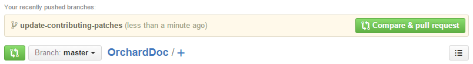
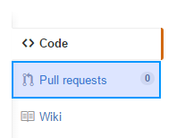
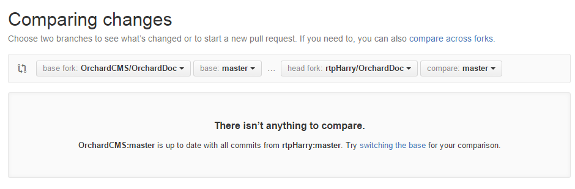
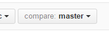
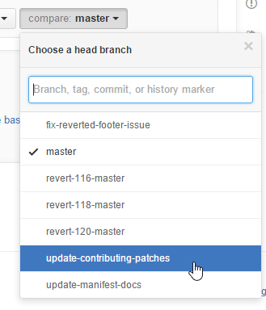
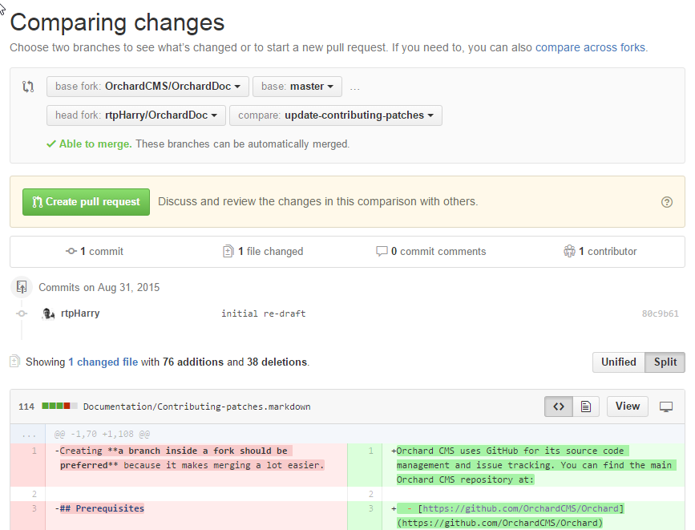
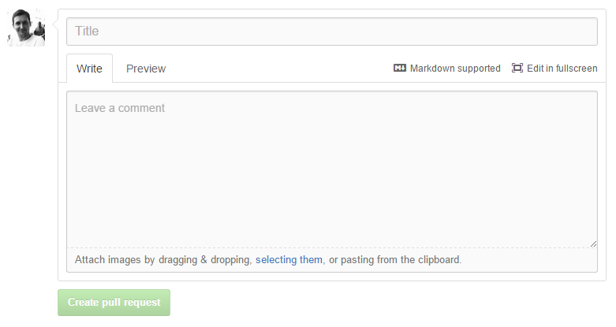
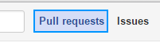
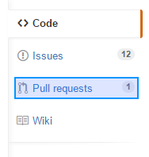
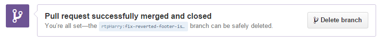

Orchard CMS uses GitHub for its source code management and issue tracking. You can find the main Orchard CMS repository at:
We welcome community contributions but please read these guidelines before you start work.
First step - open an issue or discuss an existing one
If you're new to contributing then you should discuss your plans before you start work. This is especially true if it involves building new features or changing the architecture.
Don't know where to start? There are lots of existing bugs which have been reported in the issue tracker.
All of Orchard's planning is done in the GitHub repo's issue tracker.
If your idea / bug isn't in the issue tracker (don't forget to check the closed issues as well - it might have been fixed in a development branch) then open a new issue to start a discussion with the community.
Branches
The repository is split into two main development branches, 1.9.x and dev. There is also a master branch which represents the latest released stable version of the software. While other features are being worked on you might find some additional branches temporarily created but they are just to test out ideas and they will get merged back into one of the main branches later on.
All the active feature work is being done by the core team in the 1.9.x branch. Whenever a new release is ready, changes get merged from 1.9.x to master. Master is a stable branch and is normally always in a "green" state.
The 1.9.x branch is the short-cycle dev branch. This is where features and bug fixes are being worked on for the next point release (for example, the difference between v1.9.1 and v1.9.2).
The dev branch is the long-cycle dev branch. This is where bigger features are being worked on that won't make it into the next version of Orchard CMS.
There is also a separate repository called Brochard which is the implementation of Orchard CMS in Asp.Net vNext (also known as DNX).
Milestones and labels
New issues are opened all the time. After an issue is submitted the core team members will review it. When it's acccepted as a valid task to complete it will be given a milestone and perhaps some labels. The milestone indicates which branch any pull requests for the issue should be sent to.
You might also see some additional tags like a severity level or further categorization. These labels can help you prioritise which issues you should give your attention first based on their urgency or your speciality as a developer.

In the screenshot above you can see that the bug has been tagged with the labels bug, high and Layouts. This means it has been confirmed as a bug, it is a high priority fix and it is part of the Orchard.Layouts module. Below that you can see the milestone icon with the word dev next to it. This means that if you do work on it you should work from the dev branch.
How to fork and work with the repository
The easiest way to get started with GitHub is to use Github Desktop. This software has a built-in tutorial which will teach you the basics when you first install it.
You can also create a fork via the GitHub website. GitHub have provided a guide explaining how to fork a repo.
GitHub is powered by Git. If you're an advanced user with experience of using Git on the command line then you can interact with GitHub hosted repositories as you normally would. If you're interested in learning then GitHub have their own interactive code school and the entire Pro Git book is available has also been made available by it's authors and is endorsed by the official Git website.
Working on an issue
By now you should have agreed with the community which issue you're working on, you should know which branch you're targeting and you should have created your own fork.
When working on an issue you should create a branch in your local clone per-issue. This branch isolates your changes from the master branch. You can merge this new branch back in to the main codebase later on with a pull request.
Please work on only one issue per branch / pull request.
Please follow the code conventions document when writing new code for Orchard.
Once you've made your changes you need to publish your local commits back to the remote fork in your GitHub account. The basic Git concept behind this process is to commit your local changes and then push the branch to your remote copy on GitHub.
This can be done in many ways:
- Using GitHub Desktop
- From within Microsoft WebMatrix 3
- From within Microsoft Visual Studio
- Using Git Extensions
- Using Git on the command line
If you're just starting out with Git then you should use GitHub Desktop to make this process simple for yourself.
Once this is done, your changes are on GitHub, but not yet in the project's official repository. To get it there, you'll need to ask us to pull the changes in. In order to do that, send us a pull request.
Submitting a pull request
When you have finished your work on the issue you can create a pull request. A pull request opens a dialog with the community to review your work and provide feedback.
Creating a pull request is best done from within the GitHub.com website. You can create pull requests using other techniques but using the GitHub.com has a clear interface so that you can make sure you are creating a pull request with the correct branch and you can have one final check of the files before you initiate it.
Navigate to your forked copy of the OrchardDocs repo. Its url will be https://github.com/{YourUserName}/OrchardDoc
You should see a create pull request bar along the top of your repos page:

This is a shortcut that GitHub have implemented to help you quickly create a pull request from your most recent push. If this isn't the branch you want to create the pull request you want by following these steps:
-
Visit your fork of OrchardDocs in your GitHub account (don't forget, it can be found at
https://github.com/{YourUserName}/OrchardDoc) -
Click
Pull Requestsfrom down the right hand side of the site
-
Click the
New pull requestbutton in the top right: -
You will be taken to the Comparing changes screen. In the main box it will probably say there isn't anything to compare:

The
base forkis the place you are sending the changes to (the official Orchard repository). Thehead forkis your fork with the new files. -
Next to the
head forkselect the drop down box that starts with the labelcompare:
-
Select the branch you want to merge:

In this screenshot the
upgrade-contributing-patchesbranch is being selected. -
The page will refresh and you will see all the files that are going to be updated by your pull request:

Review the files that are going to be changed. This is your last chance to double check everything is correct. Check that you haven't included any passwords or other sensitive data (If you have you will need to change the passwords as they are already public on your GitHub account).
When you're happy with the pull request click the green
Create pull requestbutton near the top of the Comparing changes page. -
On this final screen you can give your pull request a title and a description:

You should make your description as detailed as possible. You can use markdown to add headings and other formatting. You can also copy/paste screenshots into the description and it will automatically upload and insert them for you.
IMPORTANT GitHub supports automatically closing issues via pull requests. If you are working on issue #1234 then be sure to add the phrase
fixes #1234somewhere in your description. When the pull request is accepted it will automatically close the corresponding issue. You can actually use several different keywords depending on whichever you prefer to achieve this same effect. -
The final step is to click the
Create pull requestbelow your description.
Your pull request has now been created and will be reviewed by the community and the core team.
Don't forget! Your pull request is a living thing. If you make more commits to your branch and push them to your GitHub account they will be automatically included in the pull request.
This is useful if somebody gives you feedback suggesting changes but it also means that you shouldn't delete the branch until after the pull request has been accepted or declined.
You will get a notification when there is any activity on your pull request. When you are on GitHub.com you will see your notification icon light up with a little blue dot:
Unless you have turned email notifications off, you will also receive an email from GitHub.
You can check on your pull request at any time by navigating to it through one of several ways in GitHub:
-
Click the Pull requests menu option in the top of the GitHub.com website:

-
Navigate to the OrchardDocs repo and click Pull requests down the side menu:

Pull request review process
The Orchard development team meets every week to review pull request and triage issues. During this meeting the team will decide if the pull request fulfills the prerequisites or comment if any improvements should be applied.
If an agreement is reached to accept the pull request then it will be marked as so and someone with commit rights on the main repository will accept the pull request and merge your work into the Orchard CMS repository. This process might involve altering the history to remove any feedback loop changes which don't add anything to the work done.
If more work is requested you make the changes on your local branch, commit them, push the branch to your GitHub account they will be automatically included in the pull request for further review.
What to do once your pull request has been reviewed
Once your contribution has been accepted and integrated into the official Orchard CMS repository you can now delete the branch. GitHub will let you know when this is safe to do. You will see a Delete branch button at the bottom of the pull request page:

If your feature was accepted please consider contributing some documentation to the OrchardDoc repo. Just as this article has helped you out today, by documenting your new feature you can help other Orchard users to get the most out of Orchard CMS. You can read more about the documentation process here.
The fork that you made can be re-used for as many contributions as you like. Just remember to keep making a new branch each time you start work on a new issue. There is one thing to consider though: While you've been working on this there has probably been other commits and pull requests on whichever branch you're working on. You can bring your branch back in line with the main repo by syncing your fork.
What to do if your pull request is not accepted
Sometimes pull requests don't get accepted. Maybe the feature isn't classed as complete enough, maybe you have a different vision for the feature compared to the core team. Whatever the reason, if you find yourself in this position then don't worry.
Consider implementing your new idea as an Orchard Module instead. There are plenty of tutorials on this website and around the web which will teach you how to do this. With the way Orchard has been built you can extend and replace almost every part of it.
When you have extracted your code into a module you can submit it to the Orchard Gallery for other users to download and use in their sites.